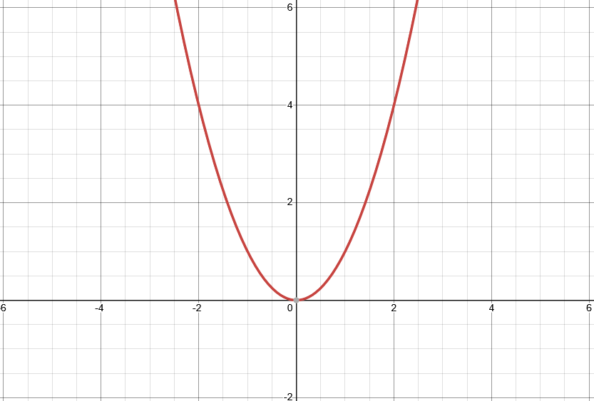
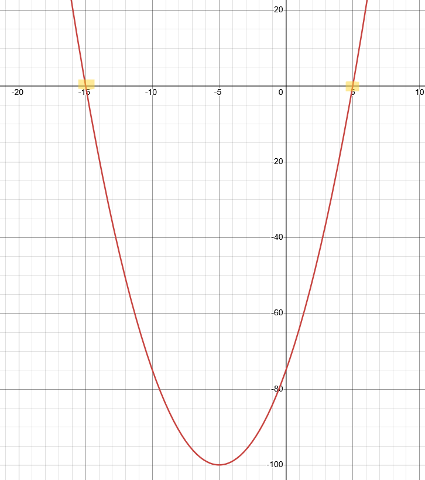
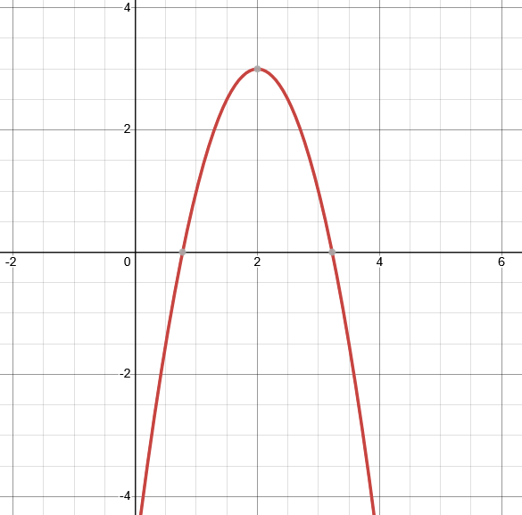
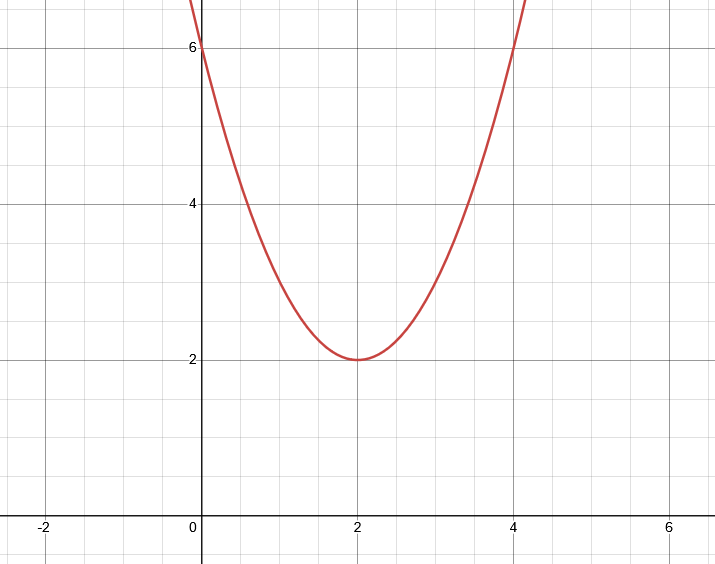

Polynomials
Contents
Overview
While linear functions represent a broad range of functions, the rest of functions can be considered non-linear (obviously).
One important type of non-linear function are polynomial functions. As a simple exercise, imagine what would happen to a function like \(y = 2x + 5\) if \(x\) was raised to the power of 2, 3, or any other number.
Such a function is a polynomial. This class of functions encompass a whole range of functions with unique characteristics, which will be explored in this section.
Introduction to Polynomials
As stated previously, polynomials are simply a series of terms added (or subtracted) together. Polynomials are always of the form:
\[ f(x) = a_nx^n + a_{n-1}x^{n-2}+...+a_1x+a_0 \]
Here, \(a\) simply represents a constant (e.g., \(a_n\) may be 4, while \(a_{n-1}\) may be 15). \(n\) is some non-negative integer that represents the degree of the polynomial. That is, the degree of a polynomial is the largest power of the polynomial.
For example, \(x^3+2x^2+5x+4\) has a degree of 3, since \(x^3\) has the largest power.
Types of Polynomials
Polynomials are defined based upon their degree.
Quadratic Function
A Quadratic function is a polynomial function of degree 2. It has a standard form of:
\[ f(x) = ax^2 + bx + c \]
If b & c are 0, then the quadratic function, when graphed, will look like the following. This shape is called a parabola.

Figure 2.1.1: Graph of Quadratic Function: f(x) = x^2
The values of b and c influence the positioning of the graph, while \(a\) influences the width of the graph. For instance, the following plot is a graph of \(f(x) = 5x^2 - x + 1\).
Quadratic Function: Forms
Notice that the graph has different values for its minimum, its intercept, etc. This is due to the values of \(a, b, c\). There are more useful forms of a quadratic function, which enable a more direct impact on these characteristics.
For instance, if you wanted to influence the roots of the quadratic (roots are the x-intercept of the graph. Also known as a zero, a horizontal intercept, etc.), then you would utilize the form:
\[ f(x) = a(x-r_1)(x-r_2) \]
Where \(r_1\) and \(r_2\) are roots of the quadratic function.
For instance, say you wanted a quadratic function with roots at \(5\) and \(-15\). Say \(a=1\). Such a formula would be:
\[ f(x) = (x-5)(x+15)\]
Also notice that this is a clear example of FOIL, and you could determine that the standard form of this equation is:
\[ f(x) = x^2 + 10x - 75 \]
As proof, we can graph this equation, and see that the roots are indeed at the ordered pairs \((0, 5)\) and \((0, -15)\):

Figure 2.1.2: Graph of Quadratic Function: f(x) = (x-5)(x+15)
Alternatively, you may need to define a quadratic based on the vertex of the quadratic. The vertex is the minimum (or maximum, in case \(a\) is negative) point on the graph. To do so, you would utilize the vertex form, which is shown below:
\[ f(x) = a(x-x_1)^2 + y_1 \]
Here, x_1 and y_1 are the x and y coordinates of the vertex (respectively).
Say, for instance, you wanted a quadratic function which started out at the ordered pair \(2, 3\) and moved downward from there. That is, the vertex is a maximum. This means that \(a\) must be negative; so let’s just say that we decide on \(a=-2\). Thus, such a function would be:
\[ f(x) = -2(x-2)^2 + 3 \]
This, when graphed, would look as follows:

Figure 2.1.3: Graph of Quadratic Function: f(x) = -2(x-2)^2 + 3
Quadratic Roots
Now, we had discussed controlling roots, but you can also control how many roots by a simple series of rules:
- If the difference between \(r_1\) and \(r_2\) is less than 0, then there are no real roots. Instead, these roots are complex numbers. The parabola does not and will never intersect the \(x\)-axis!
- If the difference between \(r_1\) and \(r_2\) is zero, then there is exactly 1 root, and exactly 1 complex root. The vertex of the parabola intersects the x-axis. This is the only point of intersection seen on a Cartesian plane.
- If the difference between \(r_1\) and \(r_2\) is zero, then there is exactly 2 real roots. The parabola intersects the x-axis twice.
Demonstrating the Rules
These rules can be demonstrated.
We have already seen that when the difference of the roots is zero, then there is only one root. This is most simply demonstrated in Figure 2.1.1, which shows the graph of \(f(x)=x^2\); the vertex intersects the origin!
Rule 1 really just requires shifting this graph upward. Let’s imagine a parabola that points up (so \(a\) must be positive), where the vertex has a \(y\) value greater than 0. For instance, \(f(x) = (x-2)^2 + 2\).

Figure 2.1.4: Graph of Quadratic Function: f(x) = (x-2)^2 + 2
Finally, rule 3 has already been demonstrated by earlier graphs. These are the three rules that can be used to assess the behavior of a quadratic’s roots!
Cubic and Beyond
Characteristics
TODO: polynomial limits influenced by degree + sign on highest term
TODO: Roots
Closing
| Previous | Next |
|---|---|
| ← Introduction | Limits → |